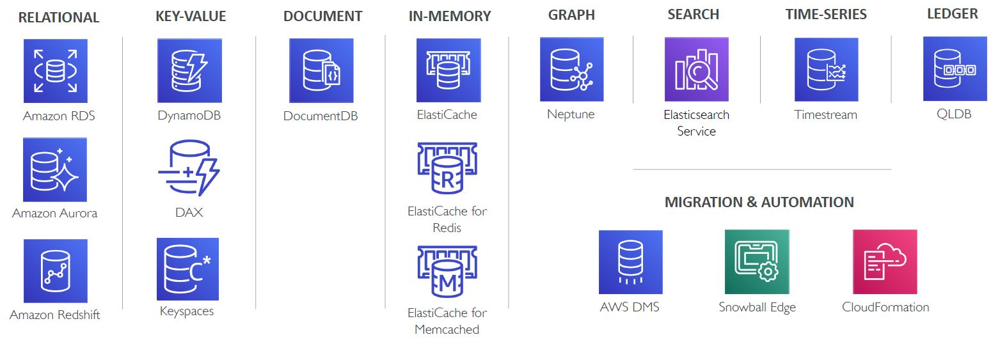
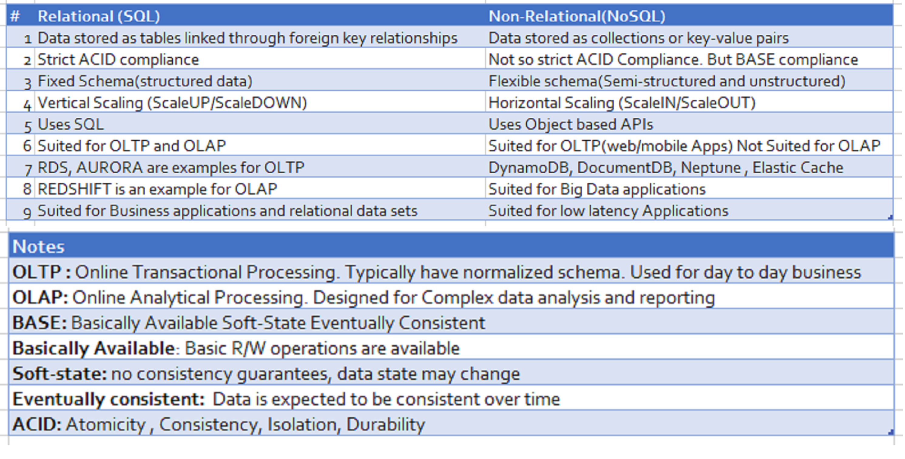
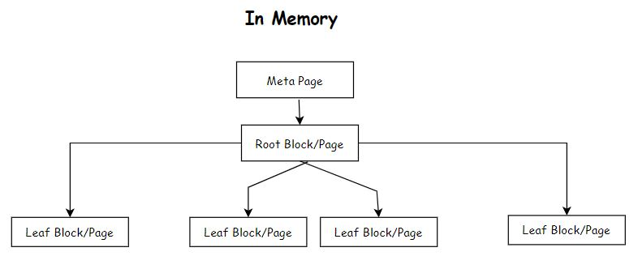

PostgreSQL
Learning and Documentation
Lets gets started!!
- Version: 1.0
- Author: Learning and Documentation
- Created: 3 January, 2023
- Update: 3 January, 2023
If you have any questions that are beyond the scope of this help file, Please feel free to email via Item Support Page.
Choosing the Right Database
What questions to be asked before choosing the database?
1. What is the workload? Is it read-heavy, write-heavy or balanced workload ?
2. What are the Throughput needs? And will it change? Does it need to scale or fluctuate during the day?
3. How much data to store and for how long? Will it grow? Average object size? How are they accessed?
4. Data durability? Source of truth for the data ?
5. What are the Latency requirements? How many concurrent users for the database ?
6. What is the data model ? Structured ? Semi-Structured? How will you query the data ?
7. What is the Nature of the Schema? Strong schema? More flexibility? Reporting? Search? RDBMS/ NoSQL
8. What are the License costs?
What are the purpose built databases in AWS?

What are the different types of data?
There are three types of data
1. Structured:
- Organized data and Strict, Schema compliant, predefined structure. Typically stored in tables.(Relational databases)
- Suitable for OLTP (Online Transactional Processing ) and OLAP (Online Analytical Processing)
- Organized data and not strict, i.e. not constrained by a specific Schema. Or easily expandable schema.
- Examples include XML , JSON, Parquet etc. Typically considered as non relational databases
- Typically used in Big-data solutions that demands low latency and high performance.
- Fully un-organized. Any data that doesn't fall under structured or semi-structured is unstructured.
- Examples include Files, documents, images, photos, videos, messages , social media posts etc.
Comparison of Relational and Non-Relational Databases

HTML Structure
iDocs follows a simple and easy to customize coding structure. Here is the sample for your reference:
The template is based on
Bootstrap Framework
If you need more information, please visit bootstrap site: https://getbootstrap.com
Sass
Color Schemes
Theme Customization
Logo Settings
Layout
Documentation and examples for header, navbar, sidebar, footer
Header
Box Layout Style
Content
Documentation and examples for displaying typography, code, table, image and video and more..
Typography
Documentation and examples for typography, headings, body text, lists, and more.
Headings
Code
Documentation and examples for displaying inline and multiline blocks of code
Inline code
Table
Documentation and examples for opt-in styling of tables.
Icons
Image
Documentation and examples for opting images into responsive behavior and add lightweight styles to them—all via classes.
Responsive Images
Image lightbox
Show image popup when click on image:
Video
Create responsive video embeds based on the width of the parent by creating an intrinsic ratio that scales on any device.
Embedded Video
Wrap any embed like an <iframe> in a parent element with .embed-responsive and an aspect ratio. The .embed-responsive-item isn’t strictly required, but we encourage it.
Postgres Performance
Documentation and examples for PostgreSQL Performance, Heap File, Blocks and Indexes
Basics
-
Where does Postgres Store Data?
SHOW data_directory;This retrieves the path where data directory is installed for that postgresql. In the 'base' folder under data directory all the databases will be stored/persisted. Each database will be stored as a folder and an integer is given as the folder name.
-
How to know what database is mapped to the folder name?
The folder name will be a number not the actual database name.
SELECT oid, datname from pg_database; -
What are the contents of the database folder?
For example, postgres database folder. Here postgres database folder will be mapped to a integer number. When you go into that folder, you would see a lot of files. To know more details about that folder, Run the query
SELECT * FROM pg_class;This will show all the details of all the databases created under the installed Postgresql
HEAPS, PAGES/BLOCKS & TUPLES
-
What is a HEAP or HEAP File?
HEAP/HEAP File contains all the information for a specific relation/table. It holds all the data for a particular table. Ex: if we have created a table called EMPLOYEES, a HEAP File gets created to store all the Employees information. This file will be stored under '"data_directory"/base/oid_folder_of_the_database/oid_of_the_table' Note: This is not HEAP Data structure
-
What is a Tuple or Item?
It is nothing but a particular row of a table. [Individual row from the table].
-
What is Block or Page?
The Heap file is divided into many different 'Blocks' or 'Pages'. Each Page/Block stores multiple number of rows Each Block/Page is 8 KB in size.
-
How BLOCK is managed/stored ?
Each Block would have 5 sections
1. Page Header Data (Information about the block) -24 bytes long
2. Item Id Data (Information about the Tuples) - 4 bytes per item.
3. Free Space: The unallocated space. New item identifiers are allocated from the start of this area, new items from the end.
4. Items (Data of the Tuples)
5. Special Space (Index access method specific data. Different methods store different data. Empty in ordinary files)
6. To know how PostgreSQL stores data at the binary level check this Link
Indexes
-
What is a Full Table Scan?
If there is no Index created, before applying the filters all the data from the Heap File will be loaded RAM. The search takes place one by one. As a result it would impact the Performance. The primary objective is to make sure the data transfer between hard-disk and RAM is minimized. Try ways to limit the data transfer. In general, the Full table scan results into a poor performance. But there are situations where Full Table Scan is desirable.
-
What is an Index?
Index is a data structure that efficiently tells us what block/index a record is stored. When Index is created, a separate mapping file is build to store the address of each value. 1. A file containing column value and it address gets created
2. Based on the Index Type, the elements will be organized/stored in a meaningful way. [Alphabetical for text and values for numbers]
3. For example, B-Tree Index Type, all the values will be sorted organized into a tree by applying B-Tree.
4. All the values will be distributed in the leaf-nodes evenly in order left to right.
-
How to create/delete an Index?
When the Index name is not provided
Generally tablename_columnname_idx is the convention being followed. To create Index with a predefined nameCREATE INDEX ON 'table-name' ('column-name')CREATE INDEX 'index-name' ON 'table-name' ('column-name')To drop an Index
DROP INDEX 'index-name' -
What are the benefits of Indexes?
In general,We will get the tremendous benefits by creating Indexes.
Improved query performance: Indexes allow the database to quickly locate and retrieve specific rows of data, which can greatly improve the performance of queries that search for specific data.
Reduced disk I/O: Without indexes, the database would need to scan the entire table to find the desired data, which can be slow and resource-intensive. Indexes allow the database to quickly locate the desired data, reducing the amount of disk I/O required.
Improved concurrency: Indexes can improve the concurrency of a database by reducing the amount of time that a table lock is held.
Enforced uniqueness: Some indexes, such as unique indexes, can be used to enforce uniqueness constraints on the data.
Improved join performance: Indexes can also improve the performance of joins, by reducing the amount of data that needs to be scanned when joining tables.
Improved performance for aggregate functions: Certain types of indexes, such as B-tree, can be used to improve the performance of aggregate functions such as SUM, COUNT, AVG, etc.
Improved performance for sorting: Indexes can be used to sort the data, which can improve the performance of ORDER BY clauses.
-
What are the downsides of creating Indexes?
Increased disk space usage: Indexes require additional disk space to store the index data. This can be a significant issue for large tables or for systems with limited disk space.
Increased write performance: time a row is inserted, updated, or deleted in a table, the corresponding index must also be updated. This can slow down write performance, especially for large tables or high write loads.
Increased maintenance overhead: Indexes need to be maintained, which can add additional overhead. This includes tasks such as updating the index when data is added or removed, and periodically rebuilding the index to improve performance.
Query performance trade-offs: Indexes can improve query performance for certain types of queries, but they may not be beneficial for all queries. Additionally, using too many indexes can actually slow down certain types of queries.
Index bloat: Over time, indexes can become fragmented, which can cause them to take up more disk space and slow down performance. Regularly monitoring and vacuuming the indexes can help prevent this issue.
un-used Indexes: In certain scenarios, Postgres doesn't use indexes while executing queries. We need to be aware and create them only when they are needed.
-
What is Index Fragmentation?
-
When do we need to rebuild Indexes periodically in Postgres?
-
How to get the table size and index size?
SELECT pg_size_pretty(pg_relation_size('table_name')) SELECT pg_size_pretty(pg_relation_size('index_name')) -
What are the different types of Indexes?
B-Tree (Balanced Tree Index): A B-Tree index is a type of index that is commonly used in relational databases, including PostgreSQL. B-Tree stands for balanced tree, which refers to the way the index is structured. It is a general purpose index. 99% of the time you want this. In a B-Tree index, the data is organized into a hierarchical structure of nodes and keys. Each node in the tree contains a collection of keys, which are used to navigate to the next level of the tree. The keys in each node are sorted in ascending order, which allows for efficient search, insertion, and deletion operations. When a query is executed that requires data from a B-Tree indexed table, the database uses the keys in the B-Tree index to quickly locate the desired data. This allows the database to avoid scanning the entire table, which can greatly improve the performance of the query. B-Tree indexes are particularly useful for large datasets, and are well suited for queries that involve range searches, such as WHERE id BETWEEN 100 AND 200. They also support sorting and aggregate functions such as SUM, COUNT, AVG etc. Additionally, B-Tree indexes are multi-purpose indexes and can be used for many types of queries, including single-column and multi-column queries, and for enforcing unique constraints on the indexed columns.
2. Hash Index: It used to speed up simple equality checks. A HASH index is a type of index in PostgreSQL that uses a hash function to map the indexed values to a fixed number of buckets. It is useful for exact-match lookups of a single column, particularly when the cardinality of the indexed column is not too high, and the data distribution is random. HASH indexes are created using the CREATE INDEX command with the USING HASH option.The syntax would be:
CREATE INDEX index_name ON table_name (column_name) USING HASH;HASH indexes are useful for:
Exact-match lookups: HASH indexes are particularly efficient for exact-match lookups on a single column. They can quickly locate the desired data by hashing the indexed value and looking up the corresponding bucket.
High-cardinality data: HASH indexes are useful for high-cardinality data, which means data with a large number of distinct values, as it can handle a large number of unique values.
Random data distribution: HASH indexes are most efficient when the data distribution is random.
Equality operator: HASH indexes are most efficient when used with the equality operator (=)
However, HASH indexes have some drawbacks, such as they are not useful for range queries and they can be slower than other types of indexes when the data distribution is not random, or when the table has a high number of duplicates values. Additionally, they can not be used for sorting or aggregate functions such as SUM, COUNT, AVG etc. It's worth noting that PostgreSQL only creates an index when it determines that the index will be useful and beneficial for the performance of the queries, and it's always recommended to monitor the performance of the queries and indexes to ensure that they are working as expected.
2.1 What is the cardinality of the indexed column?
The cardinality of an indexed column refers to the number of distinct values in that column. The cardinality of a column can have an impact on the performance of a HASH index. When the cardinality of the indexed column is low, it means that there are relatively few distinct values in the column. In this case, a HASH index may not be as efficient as other types of indexes, such as a B-Tree index
3. GiST Index: It is used for Geometry, full-text search.
GiST (Generalized Search Tree) index is a type of index in PostgreSQL that is used for efficient search on complex data types and operators. It's a multi-purpose index that can be used for several types of data, such as geometric data, IP addresses, full-text search and more. GiST indexes are created using the CREATE INDEX command with the USING option and the gist method. The syntax would beCREATE INDEX index_name ON table_name USING GIST(column_name);
Complex data types: GiST indexes are designed for efficient search on complex data types and operators that cannot be indexed by B-tree or Hash indexes. It can be used for spatial data, IP addresses, full-text search, and more.
Range queries: GiST indexes are efficient for range queries, such asSELECT ... WHERE column_name > x AND column_name < y.
Spatial data: GiST indexes are particularly useful for spatial data and spatial queries,such as SELECT ... WHERE ST_Contains(column_name, x)
Text search: GiST indexes can be used to improve the performance of full-text search queries
However, GiST indexes have some limitations, such as they can be slower than other types of indexes when the data distribution is not random, they can't be used for sorting, and they can have high maintenance overhead. It's worth noting that PostgreSQL only creates an index when it determines that the index will be useful and beneficial for the performance of the queries, and it's always recommended to monitor the performance of the queries and indexes to ensure that they are working as expected.
4. SP-GiST Index: It is used for clustered data, such as dates - many rows might have the same year.
SP-GiST (Space-Partitioned Generalized Search Tree): index is a type of index in PostgreSQL that is similar to the GiST index, but it is designed for data that can be partitioned in a space-efficient way, such as IP addresses, geometric data, and more. SP-GiST indexes are created using the CREATE INDEX command with the USING option and the spgist method.
The syntax would beCREATE INDEX index_name ON table_name USING SPGIST(column_name);
Complex data types: SP-GiST indexes are designed for efficient search on complex data types that can be partitioned in a space-efficient way, such as IP addresses, geometric data, and more.
Range queries: SP-GiST indexes are efficient for range queries, such asSELECT ... WHERE column_name> x AND column_name < y.Spatial data: SP-GiST indexes are particularly useful for spatial data and spatial queries, such asSELECT ... WHERE ST_Contains(column_name, x)Text search: SP-GiST indexes can be used to improve the performance of full-text search queries Data that can be partitioned in a space-efficient way : SP-GiST indexes are particularly useful for data that can be partitioned in a space-efficient way, as they can handle high-cardinality data and random data distribution. However, SP-GiST indexes have some limitations, such as they can be slower than other types of indexes when the data distribution is not random, they can't be used for sorting, and they can have high maintenance overhead. It's worth noting that PostgreSQL only creates an index when it determines that the index will be useful and beneficial for the performance of the queries, and it's always recommended to monitor the performance of the queries and indexes to ensure that they are working as expected.
5. GIN Index: For columns that contain arrays or JSON data GIN (Generalized Inverted Index) is a type of index in PostgreSQL that is used for efficient search on data with multiple values per row, such as arrays, full-text search, and hstore data type. It's a multi-purpose index that can be used for several types of data, such as text search, IP addresses and more. GIN indexes are created using the CREATE INDEX command with the USING GIN option.
The syntax would beCREATE INDEX index_name ON table_name USING GIN(column_name);
Data with multiple values per row: GIN indexes are particularly efficient for data with multiple values per row, such as arrays, full-text search, and hstore data type.
Text search: GIN indexes are commonly used for full-text search and other text search-related queries.
Efficient search: GIN indexes are efficient for search queries, such as SELECT ... WHERE column_name @> x
High-cardinality data: GIN indexes are useful for high-cardinality data, which means data with a large number of distinct values, as it can handle a large number of unique values Data with complex data types: GIN indexes can be used for data with complex data types that cannot be indexed by B-tree or Hash indexes.
However, GIN indexes have some limitations, such as they can be slower than other types of indexes when the data distribution is not random, they can't be used for sorting, and they can have high maintenance overhead. It's worth noting that PostgreSQL only creates an index when it determines that the index will be useful and beneficial for the performance of the queries, and it's always recommended to monitor the performance of the queries and indexes to ensure that they are working as expected.
5.1 How GIN Index is best for JSON data ?6. BRIN Index: It is used and specialized for really large datasets. BRIN (Block Range INdex) is a type of index in PostgreSQL that is used for large-scale data with a sortable order, such as time-series data or data that is sorted by an integer or a timestamp column. It's particularly useful for tables that have millions or billions of rows, where a traditional B-tree index would not be efficient. BRIN indexes are created using the CREATE INDEX command with the USING option and the brin method.
The syntax would beCREATE INDEX index_name ON table_name USING BRIN (column_name);
Range queries: BRIN indexes are efficient for range queries, such asSELECT ... WHERE column_name > x AND column_name < y.Time-series data: BRIN indexes are particularly useful for time-series data, as they can handle data with a large number of rows and provide efficient queries on range of timestamps.
Data sorted by an integer or a timestamp column: BRIN indexes can handle data sorted by an integer or a timestamp column, which means that the indexed column has a sortable order.
Large-scale tables: BRIN indexes are particularly useful for large-scale tables, where a traditional B-tree index would not be efficient. However, BRIN indexes have some limitations, such as they are not useful for data that is not sorted by an integer or a timestamp column, they can't be used for sorting, and they can have high maintenance overhead. It's worth noting that PostgreSQL only creates an index when it determines that the index will be useful and beneficial for the performance of the queries, and it's always recommended to monitor the performance of the queries and indexes to ensure that they are working as expected.what is the difference between GiST Index and SP-GiST Index?
When does POSTGRES automatically creates Indexes?
Primary keys: When a primary key constraint is created on a table, PostgreSQL automatically creates a unique index on the primary key column(s). Foreign keys: When a foreign key constraint is created on a table, PostgreSQL automatically creates an index on the foreign key column(s). Unique constraints: When a unique constraint is created on a table, PostgreSQL automatically creates a unique index on the constrained column(s). Full-text search: When a text search index is created using the full-text search functionality in PostgreSQL, the database will automatically create an index on the specified text search column(s) Expressions index: When an expression index is created, PostgreSQL creates an index on the result of the specified expression. GIN (Generalized Inverted Index): When a GIN index is created, PostgreSQL automatically creates an index on the specified column(s) It's worth noting that PostgreSQL only creates an index when it determines that the index will be useful and beneficial for the performance of the queries. And it's always recommended to monitor the performance of the queries and indexes to ensure that they are working as expected.
How to see automatically generated indexes?
In general, these indexes do not appear in the constraints section in PG-Admin To pull all the indexes we need to pull it form pg_class table SELECT relname, relkind FROM pg_class WHERE relkind = 'i' The pg_class table lists all the objects that exists in the database. In the above 'i' refers to Index.
When do we need to create Full-text search index?
When do we need to create Expression Index?
When do we need to create GIN Index?
What happens when Index is created?
A file gets created on the disk for the created index with a random number When you create an index in PostgreSQL, a new data structure is created that stores a copy of one or more columns of data from a table, along with a pointer to the original data. This new data structure is organized in a way that allows for faster searching, sorting, and filtering of the data based on the indexed columns. The structure of the file internally has the following 1. 8KB Meta Page 2. 8KB Leaf Block/Page 3. 8KB Leaf Block/Page 4. 8KB Root Block/Page 5. 8KB Leaf Block/Page etc. In Memory Meta Page --> Root Block/Page --> one or more Leaf Block/Page 
What is pageinspect extension?
The extension provides additional functionality in the postgresql The pageinspect extension would help to provide information or inpsect about pages/blocks or Heap File.
Syntax:CREATE EXTENSION pageinspect; SELECT * FROM bt_metap('index_name')SELECT * FROM bt_page_items('index_name')SELECT * FROM bt_page_items('index-name', page_number) Example: SELECT * FROM bt_page_items('user_username_idex', 1)
1. for any other page number which is a Leaf(or Parent) Page/Block. Here ctid represents the pagenumber and index of the table heap file. Every Leaf Page/Blocks first entry would have a pointer to the next page/block.Another Question?
Additional Details
Query Tuning
Documentation and examples for PostgreSQL Basic and Advanced Query Tuning, EXPLAIN and EXPLAIN ANALYZE
-
what are the various steps involved while executing an SQL in Postgres?
In PostgreSQL, there are primarily 4 steps 1. Parser It validates the syntax and creates a query tree from the query that is being written by the user. It will be handling the query-tree to Rewrite 2. Rewriter The query tree will be modified if needed so that query can be executed efficiently. Also if views are used they will be decomposed into underlying table references. 3. Planner The goal of the planner is to look at the query tree and figure out what data needs to be fetched and comes up with different plans and strategies that is best and fastest. For example, it will try to check if there are any indexes and see if there is any efficiency in using them vs pulling the data directly without using indexes etc. 4. Execute Run the Query
Regular Expressions
Notes on Regular Expressions and its usage in Databases (POSTGRES)
Basics
-
What are the below
[abc] , [^abc] , [a-z] , [A-Z] , [a-zA-Z] , [0-9]- [abc] → a,b or C
- [^abc] → any character except a, b, C
- [a-z] → a to z
- [A-Z] → A to Z
- [a-zA-Z] → a to z , A to Z
- [0-9] → 0 to 9
Quantifiers
-
What are Quantifiers in Regular Expressions
- [ ]? → Occurs 0 or 1 times
- [ ]+ → Occurs 1 or more times
- [ ]* → Occurs 0 or more times
- [ ]{n} → Occurs n times
- [ ]{m,n} → Occurs at least m times but less than n times.
- [ ]{n,} → Occurs n or more times
Meta Characters
-
What are Meta Characters in Regular Expressions
- \d → [0-9]
- \D → [^0-9]
- \w → [a-zA-Z_0-9]
- \W → [^w]
- \s → white space characters "[\f\n\r\t\v]"
- \S → non white space characters
- "\p{Ll}" → [a-z]
- "\p{Lu}" → [A-Z]
Special Characters
-
What are Special Characters in Regular Expressions
"." (dot) which matches any single character except a newline.
"*" which matches zero or more occurrences of the preceding character or group. -- IS DEFAULT
"*?" which matches zero or more occurrences of the preceding character or group(non greedy).
"+" which matches one or more occurrences of the preceding character or group. -- IS DEFAULT
"+?" which matches one or more occurrences of the preceding character or group(non greedy).
"?" which matches zero or one occurrence of the preceding character or group.
"^" which matches the start of a string.
"$" which matches the end of a string.
"|" which separates alternatives.
"{" and "}" which are used to specify the number of occurrences of the preceding character or group.
"(" and ")" which are used to group characters or sub-expressions.
"[" and "]" which are used to specify a character class.
"" which is used to escape special characters.
"|" which separates alternatives.
\ is an escape character
In Short
start : ^
end : $
single char : .
zero or one : *
zero or many : *
one or many : +
OR operator : |
AND operator : &
Zero-Width Assertions
-
What are Zero Width Assertions in Regular Expressions ?
It is a type of pattern in regular expressions that assert a condition without consuming any characters in the input string. They do not affect the final matched string, but influence the matching process.
Positive Lookahead assertion: (?=)
Example: \w+(?=\d)
This regular expression matches a sequence of word characters followed by a digit. but the digit is not part of the final match.
Input String : "abc123"
Matched String : "abc"
Negative Lookahead assertion: (?!)
Example: \w+(?=!d)
This regular expression matches a sequence of word characters that are NOT followed by a digit.
Input String : "abc123"
Matched String : None
Positive Lookbehind assertion:(?<=)
Example: (?<=\d)px :
This regular expression matches "px" only if it is preceded by a digit. For example the following strings would match: "13px", "7px"
Negative Lookbehind assertion: (?<!)
Example: (?<!\d)px :
This regular expression matches "px" only if it is not preceded by a digit. For example, the following strings would match: "px" , "abcpx"
Capturing Groups
-
What are Capturing Groups in Regular Expressions ?
Capture groups in regular expressions allow you to extract specific parts of the matched text. A capture group is defined by enclosing a portion of the pattern in parentheses ( and ). You can then access the captured text using back references. In PostgreSQL, you can use the regexp_matches function to extract capture groups. The function returns an array of text arrays, where each text array represents a capture group. Here's an example of how to use capture groups with the regexp_matches function in PostgreSQL:
SELECT regexp_matches('10.20.30.40', '(\d+)\.(\d+)\.(\d+)\.(\d+)'); This will return the following output: Output regexp_matches ---------------- {{10,20,30,40}} (1 row)
In PostgreSQL, if a query returns an array data type, you can refer to each element of the array as a separate column using the unnest function. The unnest function takes an array as its input and returns a row for each element in the array.
Here's an example of how to use the unnest function to refer to each element of an array as a separate column:WITH data AS ( SELECT regexp_matches('10.20.30.40', '(\d+)\.(\d+)\.(\d+)\.(\d+)') as ip_parts ) SELECT unnest(ip_parts) as ip_part FROM data; ip_part --------- 10 20 30 40 (4 rows) WITH data AS ( SELECT regexp_matches('10.20.30.40', '(\d+)\.(\d+)\.(\d+)\.(\d+)') as ip_parts ) SELECT ip_parts[1] as first_part, ip_parts[2] as second_part, ip_parts[3] as third_part, ip_parts[4] as fourth_part FROM data, unnest(ip_parts) with ordinality; This will return the following output: first_part | second_part | third_part | fourth_part -----------+------------+-----------+----------- 10 | 20 | 30 | 40 (1 row)
In regular expressions, a non-capturing group is a group that is used for grouping purposes only, but its contents are not captured and can't be accessed separately. The syntax for a non-capturing group is (?:pattern), where pattern is the regular expression pattern that should be grouped.
For example, let's say you want to extract the year from a string that contains a date. The date could be in the format "dd-mm-yyyy" or "dd/mm/yyyy". To extract the year, you could use a non-capturing group to match the separator (either - or /), without capturing it:WITH sample_data AS ( SELECT '01-01-2023'::text AS date_string ), extracted_data AS ( SELECT matches as date_values, matches[1] as month ,matches[2] as day ,matches[3] as year FROM ( SELECT regexp_matches(date_string, '(\d{2})(?:[-/])(\d{2})(?:[-/])(\d{4})') as matches FROM sample_data ) matches ) SELECT * FROM extracted_data; This will return the following output: date_values | month | day | year --------------------------------- {01,01,2023} | 01 | 01 | 2023
Another Example: Regular Expression for Phone Numbers
'(?:(?<intlcode>\+1)[ -])?\(?(?<areacode>\d{3})\)?[ -]?(?<pnum1>\d{3})[ -]?(?<pnum2>\d{4})'
?: is for un captured group
?<intlcode> , ?<areacode> , ?<pnum1> , ?<pnum2> is to give names for captured groups. Here intlcode, areacode, pnum1, pnum2 are the names of the groups
WITH sample_data AS ( SELECT '+1 (123) 456-7890'::text AS phone_number ), extracted_data AS ( SELECT matches, concat( coalesce(matches[1], ''), matches[2], matches[3], matches[4] ) as custom_format_number FROM ( SELECT regexp_matches(phone_number, '(?:(\+1)[ -])?\(?(\d{3})\)?[ -]?(\d{3})[ -]?(\d{4})' ,'g') as matches FROM sample_data ) matches ) SELECT matches, custom_format_number FROM extracted_data This will return the following output: matches | custom_format_number | ------------------------------------------- {+1,123,456,7890} | +11234567890
Regexp_matches
-
Deep dive into regexp_matches function
The regexp_matches function in PostgreSQL is used to match a regular expression pattern against a string and return the matched substrings as a set of text values. The function has the following syntax:
regexp_matches(string text, pattern text [, flags text])
The regexp_matches function uses the POSIX extended regular expression syntax, which provides a wide range of features for matching text patterns. For example, you can use the function to match patterns such as email addresses, dates, and phone numbers, or to extract information from structured text such as HTML or XML.
The flags argument is optional, and it can be used to modify the behavior of the match. Some of the commonly used flags are:
g: Global match (multiple matches across the string)
i: Case-insensitive match
m: Multiline match, "^" and "$" match start/end of lines (not just start/end of string)
c: Case-sensitive match
p: Partial newline-sensitive match
Note that you can use multiple flags together, by concatenating them. For example, to perform a case-insensitive, global search, you would use the flags gi.
Here is an explanation of each flag supported by
regexp_matchesin PostgreSQL:g(Global): Specifies that the match should return multiple matches across the entire input string, instead of just the first match.
Example:
SELECT regexp_matches('abcabcabc', '[a-z]+', 'g');will return{abc,abc,abc}.i(Case-Insensitive): Makes the match case-insensitive, so it will match upper-case and lower-case letters without differentiation.
Example:
SELECT regexp_matches('ABCabc', '[a-z]+', 'i');will return{ABC,abc}.m(Multiline): Specifies that the "^" and "$" symbols in the pattern should match the start and end of lines (not just the start and end of the input string).
Example:
SELECT regexp_matches('line1\nline2', '^[a-z]+', 'm');will return{line1, line2}.c(Case-Sensitive): Makes the match case-sensitive, so it will differentiate between upper-case and lower-case letters. This is the default behavior ofregexp_matches.
Example:
SELECT regexp_matches('ABCabc', '[a-z]+', 'c');will return{abc}.p(Partial newline-sensitive): Makes the "^" and "$" symbols in the pattern match the start and end of the input string, including any partial line at the end of the input string.
Example:
SELECT regexp_matches('line1\nline2\n', '^[a-z]+$', 'mp');will return{line2}.It's possible to use multiple flags together, by concatenating them. For example, to perform a case-insensitive, global search, you would use the flags
Note: PostgreSQL does not have the capability to name capture groups in regular expressions when using the regexp_matches function. In regexp_matches, the matched substrings are identified only by their position within the matched pattern.gi.
Examples
-
How to Test Regular Expressions in Postgres?
Here 'g' stands to pull all the matches
select regexp_matches(E'search-string', 'regular-expression' , 'g' ) as colselect regexp_matches(E'search-string', 'regular-expression' ) as col -
In the regular expression if we specify '()' is what is going display?
It will return {com} only
select regexp_matches(E'abc@abc.com, bbc@bbc.com', '[a-z]+[@][a-z]+[\.]([a-z]+)' , 'g') as colSELECT regexp_matches(E'abc@abc.com, bbc@bbc.com', '[a-z]+[@][a-z]+[\.]([a-z]+)' , 'g') as col ; -
What are other ways of executing Regular Expressions in PostGreSQL?
SELECT regexp_matches(E'abc@abc.com, bbc@bbc.com', '[a-z]+[@][a-z]+[\.][a-z]+' , 'g') as col
SELECT column from table where column ~'regular-expression'SELECT substring(column FROM 'regular-expression') from TABLE
FAQ
A FAQ is a list of frequently asked questions (FAQs) and answers on a particular topic.
Source & Credits
Support
We are located in GMT +5:30 time zone and we answer all questions within 12-24 hours in weekdays. In some rare cases the waiting time can be to 48 hours. (except holiday seasons which might take longer).
Note: While we aim to provide the best support possible, please keep in mind that it only extends to verified buyers and only to issues related to our template like bugs and errors. Custom modifications or third party module implementations are not included.Please Add your Review (Opinion) for Our template. It would be a great support for us.
Go to your Themeforest Profile > Downloads Tab > & then You can Rate & Review for our template.
Thank You.
More Templates
Changelog
See what's new added, changed, fixed, improved or updated in the latest versions.
Version 1.0 (3 Jan, 2023)
Initial Release